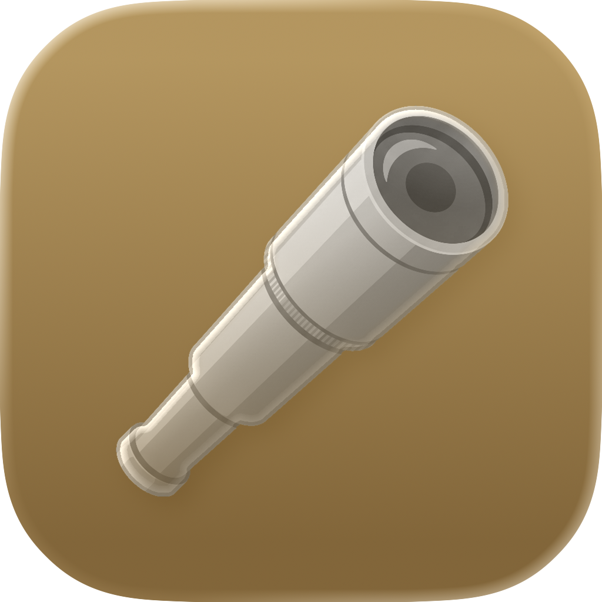

Real Quick Look previews for Google Workspace files on macOS.
When you sync Google Drive to your Mac, files like Docs, Sheets, Slides, Drawings, Forms and Sites don't download as real files. They land as tiny stub files such as .gdoc and .gsheet that hold only a document ID. Press Space on one and macOS shows a useless blob of JSON. Spyglass shows the actual document instead.
A branded card for all six file types. It shows the document icon, title, owner, and a link to open the file on Google. Works instantly and offline. No account needed.
For Docs, Sheets, Slides and Drawings, Spyglass fetches the document from Google Drive and renders a real first-page preview. This needs a Google sign-in. If you're not signed in, or the network is slow, it falls back to the free info card. The preview is never blank and never hangs.
$9, paid once. No subscription. Runs on macOS 14 or later.
Rendered previews are the optional paid feature. If you enable them and sign in, Spyglass asks permission to read your Google Drive so it can show your documents. Exactly what that means:
drive.readonly scope. It can read your files to export them; it can never edit, delete, move, or share anything.